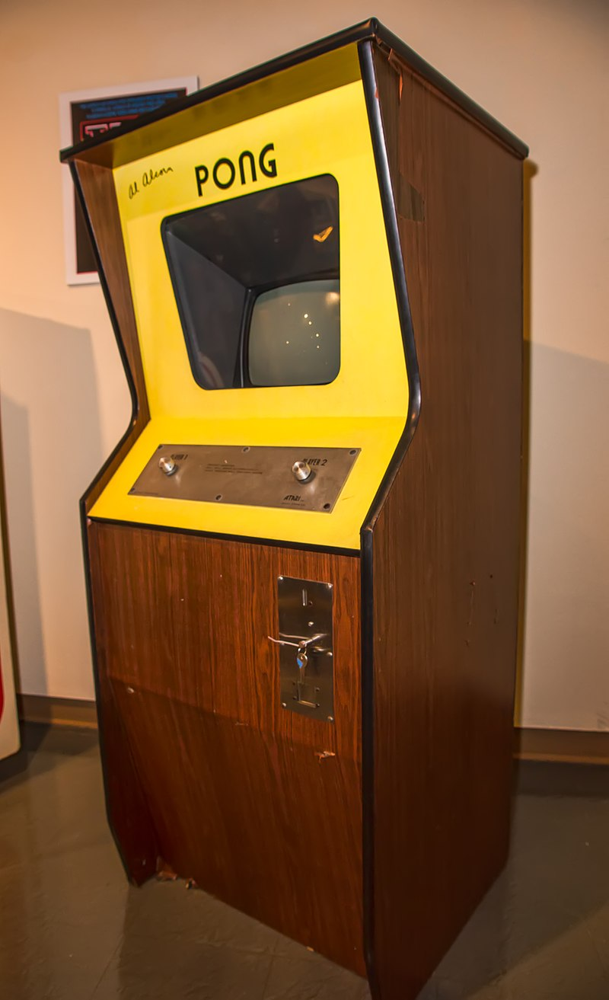

Computer Space

Computer Space is a space combat arcade game developed in 1971. Created by Nolan Bushnell and Ted Dabney in partnership as Syzygy Engineering, it was the first arcade video game as well as the first commercially available video game. Computer Space is a derivative of the 1962 computer game Spacewar!, possibly the first video game to spread to multiple computer installations. It features a rocket controlled by the player engaged in a missile battle with a pair of hardware-controlled flying saucers set against a starfield background. The goal is to score more hits than the enemy spaceships within a set time period, which awards a free round of gameplay. The game is enclosed in a custom fiberglass cabinet, which Bushnell designed to look futuristic.
Bushnell and Dabney designed the game in 1970–71 to be a coin-operated version of Spacewar!. After the pair were unable to find a way to economically run the game on a minicomputer such as the Data General Nova, they hit upon the idea of instead replacing the central computer with custom-designed hardware created to run just that game. While they were working on an early proof of concept, Bushnell found a manufacturer for the game in Nutting Associates. Working in partnership with Nutting, the pair completed the game and ran their first location test in August 1971, a few months prior to the display of a similar prototype called Galaxy Game, also based on Spacewar!. It was first shown to industry press and distributors at the annual Music Operators of America (MOA) Expo in October. With encouraging initial interest, though mixed responses from distributors, Nutting ordered an initial production run of 1,500 units, anticipating a hit game.
While the game was successful and validated Syzygy's belief in the future of arcade video games, selling over 1,000 cabinets by mid-1972 and ultimately 1,300–1,500 units, it was not the runaway success that Nutting had hoped for. The game spawned one clone game, Star Trek (1972), and Nutting produced a two-player version of Computer Space in 1973 without involvement from Bushnell and Dabney. The pair left Nutting in June 1972 and incorporated Syzygy as Atari, launching the successful Pong (1972) as their next arcade game. Computer Space's release marked the ending of the early history of video games and the start of the commercial video game industry.
Pong
Pong is a table tennis–themed arcade sports video game, featuring simple two-dimensional graphics, manufactured by Atari and originally released in 1972. It was one of the earliest arcade video games; it was created by Allan Alcorn as a training exercise assigned to him by Atari co-founder Nolan Bushnell, but Bushnell and Atari co-founder Ted Dabney were surprised by the quality of Alcorn's work and decided to manufacture the game. Bushnell based the game's concept on an electronic ping-pong game included in the Magnavox Odyssey, the first home video game console. In response, Magnavox later sued Atari for patent infringement.
Pong was the first commercially successful video game, and it helped to establish the video game industry along with the Magnavox Odyssey. Soon after its release, several companies began producing games that closely mimicked its gameplay. Eventually, Atari's competitors released new types of video games that deviated from Pong's original format to varying degrees, and this, in turn, led Atari to encourage its staff to move beyond Pong and produce more innovative games themselves.
Atari released several sequels to Pong that built upon the original's gameplay by adding new features. During the 1975 Christmas season, Atari released a home version of Pong exclusively through Sears retail stores. The home version was also a commercial success and led to numerous clones. The game was remade on numerous home and portable platforms following its release. Pong is part of the permanent collection of the Smithsonian Institution in Washington, D.C., due to its cultural impact.
OXO

OXO is a video game developed by A S Douglas in 1952 which simulates a game of noughts and crosses (tic-tac-toe). It was one of the first games developed in the early history of video games. Douglas programmed the game as part of a thesis on human-computer interaction at the University of Cambridge.
It was written on the Electronic Delay Storage Automatic Calculator (EDSAC). EDSAC was one of the first stored-program computers, with memory that could be read from or written to, and had three small cathode ray tube screens to display the state of the memory; Douglas re-purposed one screen to demonstrate portraying other information to the user, such as the state of a noughts and crosses game. After the game served its purpose, it was discarded on the original hardware but later successfully reconstructed.
OXO, along with a draughts game by Christopher Strachey completed around the same time, is one of the earliest known games to display visuals on an electronic screen. Under some definitions, it thus may qualify as the first video game, though other definitions exclude it due to its lack of moving or real-time updating graphics.
Spacewar!

Spacewar! is a space combat video game developed in 1962 by Steve Russell in collaboration with Martin Graetz, Wayne Wiitanen, Bob Saunders, Steve Piner, and others. It was written for the newly installed DEC PDP-1 minicomputer at the Massachusetts Institute of Technology. After its initial creation, Spacewar! was expanded further by other students and employees of universities in the area, including Dan Edwards and Peter Samson. It was also spread to many of the few dozen installations of the PDP-1 computer, making Spacewar! the first known video game to be played at multiple computer installations.
The game features two spaceships, "the needle" and "the wedge", engaged in a dogfight while maneuvering in the gravity well of a star. Both ships are controlled by human players. Each ship has limited weaponry and fuel for maneuvering, and the ships remain in motion even when the player is not accelerating. Flying near the star to provide a gravity assist was a common tactic. Ships are destroyed when they collide with a torpedo, the star, or each other. At any time, the player can engage a hyperspace feature to move to a new and random location on the screen, though in some versions each use has an increasing chance of destroying the ship instead. The game was initially controlled with switches on the PDP-1, though Bob Saunders built an early gamepad to reduce the difficulty and awkwardness of controlling the game.
Spacewar! is one of the most important and influential games in the early history of video games. It was extremely popular in the small programming community in the 1960s and the public domain code was widely ported and recreated at other computer systems at the time, especially after computer systems with monitors became more widespread towards the end of the decade. It has also been recreated in more modern programming languages for PDP-1 emulators. It directly inspired many other electronic games, such as the first commercial arcade video games, Galaxy Game and Computer Space (1971), and later games such as Asteroids (1979). In 2007, Spacewar! was named to a list of the ten most important video games of all time, which formed the start of the game canon at the Library of Congress.